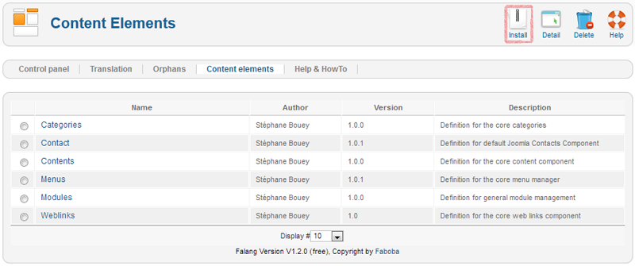
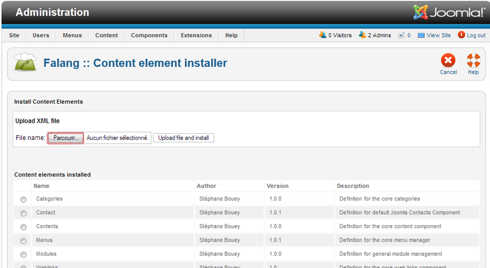
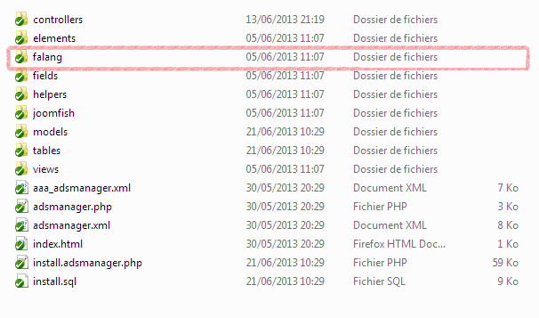
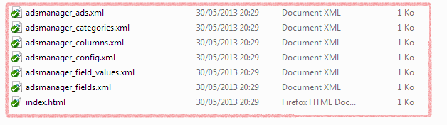
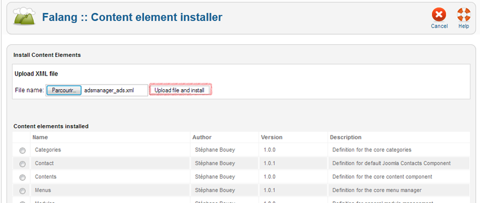
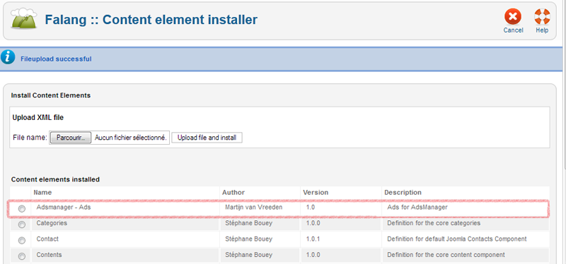
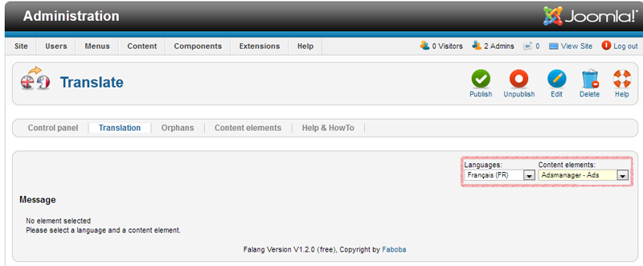
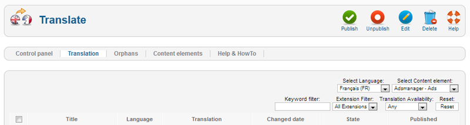

AdsManager is totally integrated with FaLang. Once you downloaded the lastest FaLang version, you must activate the plugin (go check plug-ins or in the documentation of FaLang). If you want to override the current language, you must create a content language if it doesnt not exist.
Create a content language
Click on language manager in the extensions menu, then
click on the "Content" link. If the language you
want is not installed you can install it by click
on the "Install Language" button in the toolbar.
Once you did that, you have to create a new line
with your new language following the convention,
if you have issue with it you really should read
the FaLang documentation or on Internet.
Translate AdsManager fields (step by step guide)
Check out Internationalisation.
Click on components, "Falang" and then you will see the control panel. You must click on one of the "Content Elements" located by red squares in the picture above.
Here you can see all predefined elements that can be translate. Click on the "Install" toolbar button.
If you didnt do it yet, unzip your AdsManager package, then go into the folder "Adsmanager" then "Component", "Backend" and you will see a "FaLang" or "Jomfish" folder whether you installed FaLang or Jomfish. If you don't have "FaLang" or "Jomfish" chech the article about Tools.
Here you can see the Folder "falang" and its content.
Just select the xml file you need on by one as follow.
 You can check everything went fine when you see a new row beginning with "AdsManager" and describing the content you can now translate (check the list of xml files above).
Go back to "Control Panel", click on "Translation" then select the new language you want to translate the AdsManager contents into and select the type of content. You will see this page, i don't have ad yet so it's empty but you will see the title of each ad and the translation of you wrote it, don't forget to publish. If you have any problem go check Falang Documentation or if it's specific with you pack AdsManager, contact us.
You can now use AdsManager in as many languages as you want !